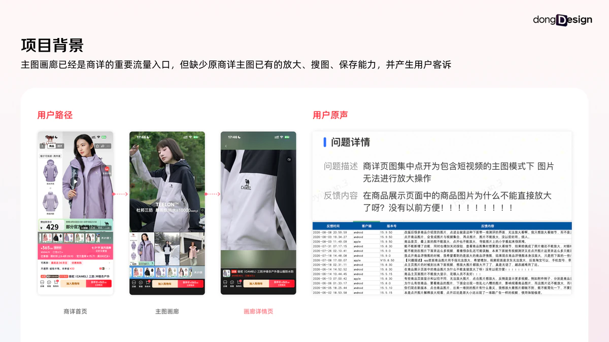
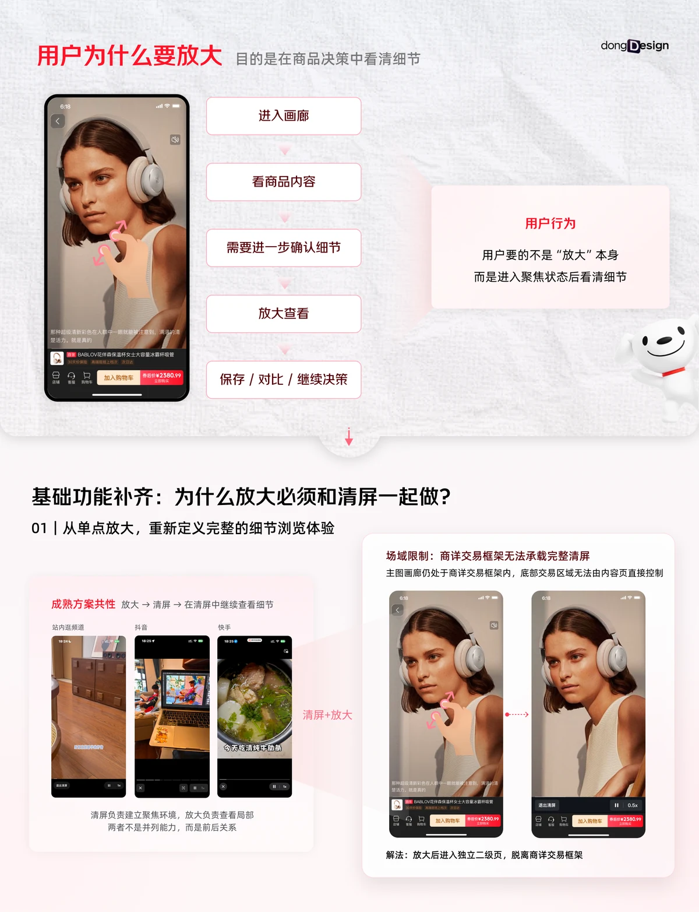
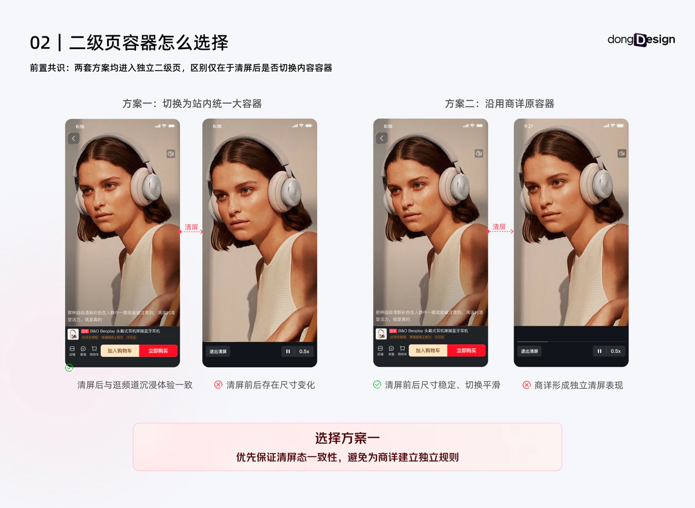
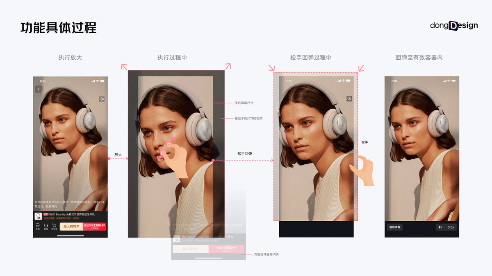
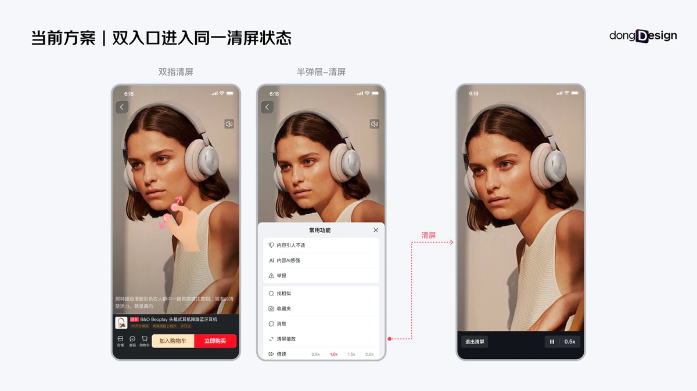
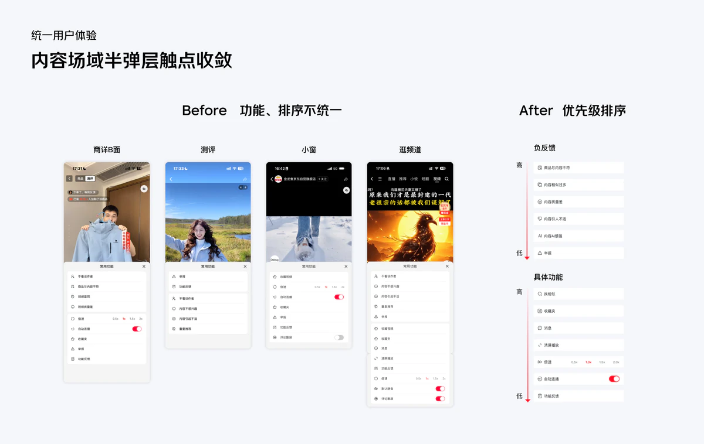
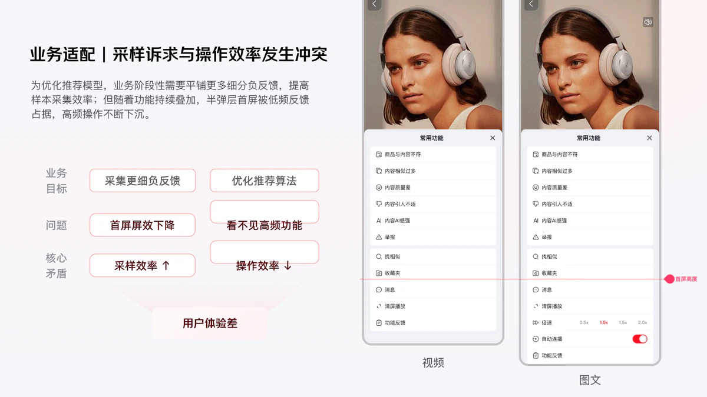
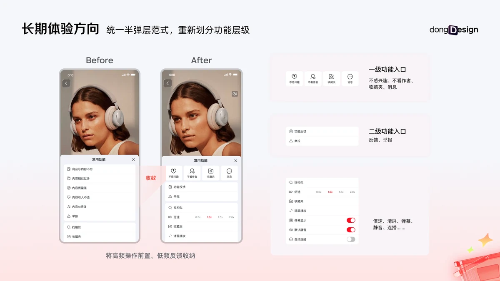
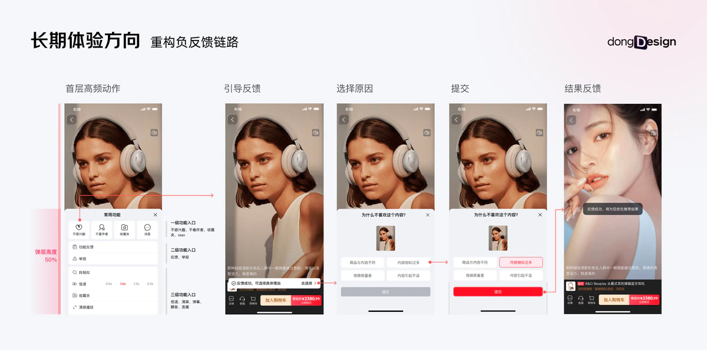
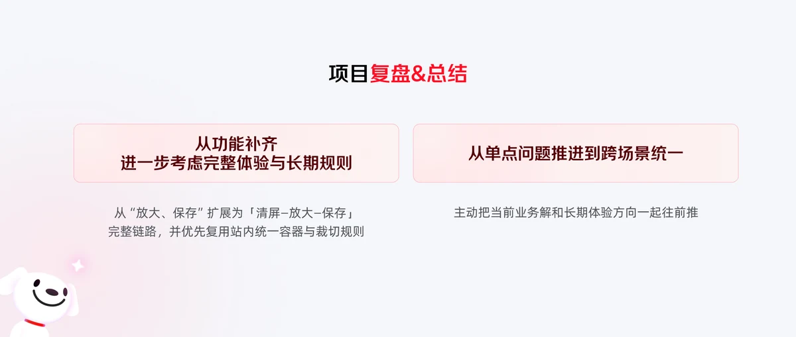

JD E-COMMERCE · PRODUCT DETAIL
商详主图画廊从基础能力补齐，到跨场景半弹层统一
围绕京东商详内容详情页的基础功能补齐，梳理内容呈现、浏览交互与业务适配，持续优化用户浏览和决策体验。










JD E-COMMERCE · PRODUCT DETAIL
围绕京东商详内容详情页的基础功能补齐，梳理内容呈现、浏览交互与业务适配，持续优化用户浏览和决策体验。









